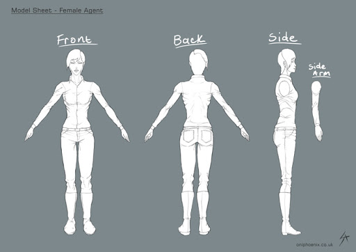
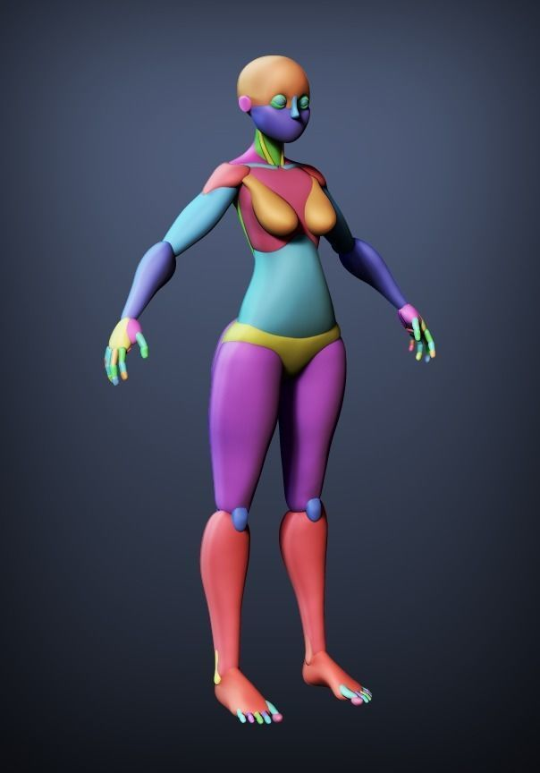
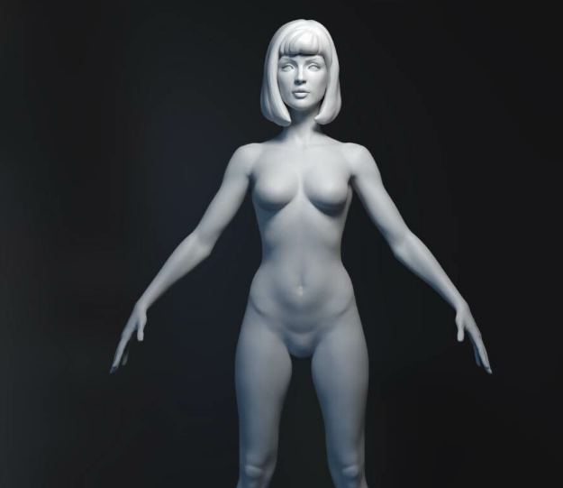
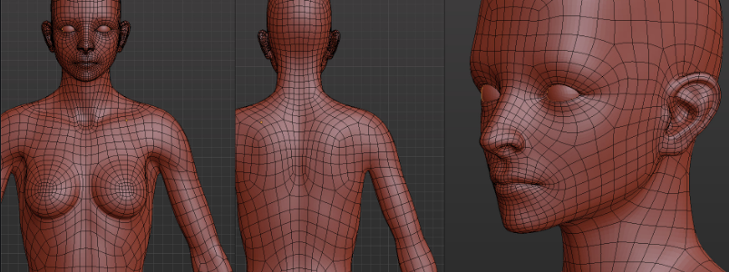
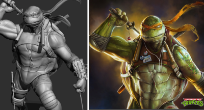
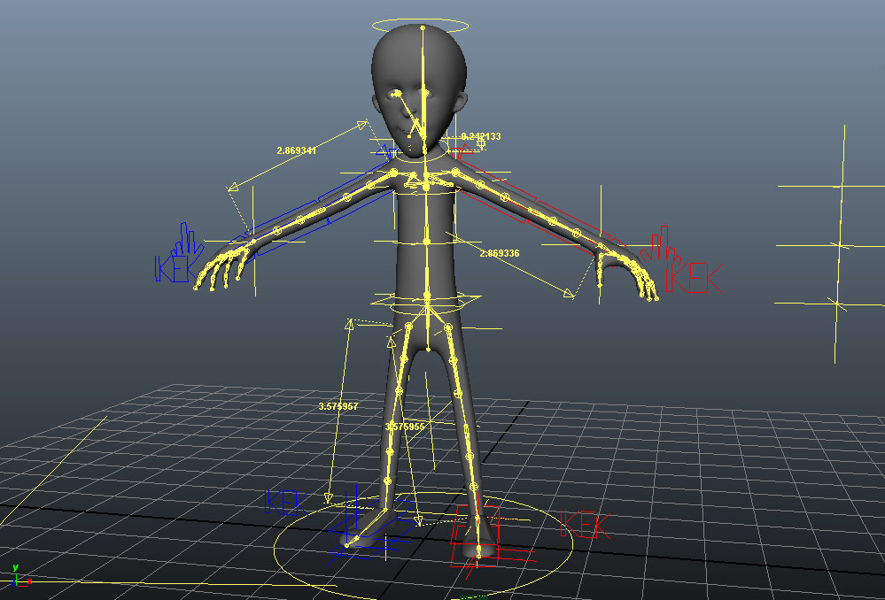

Etapas na modelagem de um personagem
Concept art

Fonte: https://www.oniphoenix.co.uk/2017/05/17/model-sheet-female-agent-and-btbdam-promo-teasers-p/
Antes de prosseguir com a modelagem de qualquer personagem, artistas 2D criam artes concetuais e model sheets do personagem que consistem em desenhos do personagem em diferentes ângulos que o artista 3D vai usar como referência.
Blockagem

Fonte: https://www.cgtrader.com/3d-models/character/woman/stylized-female-blocking
Na criação de personagems com maior complexidade Artistas 3D geralmente vão começar a modelagem criando um esboço do personagem com pouco detalhe usando formas simples.
Escultura

Fonte: https://www.artstation.com/artwork/w8K09Z
Após a blocagem, artistas 3D irão começar a esculpir de forma detalhada o personagem,assim incluindo todos os detalhes que foram especificados pelo artista 2D.
Retopologia

Fonte:https://www.artstation.com/artwork/qKKrz
A escultura de um modelo não pode ser utilizada para muitas coisas devida a sua grande quantidade de
polígonos e má topoligia é nescessário aplicar uma retopologia. Retopologia é o processo de recriar
uma modelo com poligonos usando sua escultura como base, esse processo é um dos mais importantes pois sem ele o modelo não poderá ser Riggado nem animado.
Pintura

Fonte: http://product.corel.com/help/Painter/540215550/Main/EN/Win-Documentation/wwhelp/wwhimpl/common/html/wwhelp.htm#href=Corel-Painter-Texture-painting.html&single=true
A pintura é um dos processos finais de modelagem e consiste em pintar o modelo 3D e aplicar os materiais nescessários.
Blockagem

Fonte: http://digianimate.blogspot.com/2016/05/3d-rigging.html
Rigging é o processo final de modelagem, nele articulações são inseridas no personagem o deixando pronto para animação.